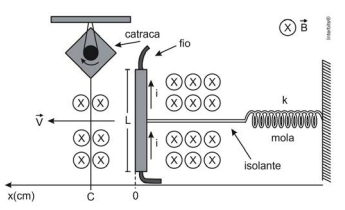

129. (Enem 2013)
Desenvolve-se um dispositivo para abrir automaticamente uma porta no qual um botão, quando acionado, faz com que uma corrente elétrica i = 6 A percorra uma barra condutora de comprimento L = 5 cm, cujo ponto médio está preso a uma mola de constante elástica k = 5 × 102 N/m. O sistema mola-condutor está imerso em um campo magnético uniforme perpendicular ao plano. Quando acionado o botão, a barra sairá da posição de equilíbrio a uma velocidade média de 5 m/s e atingirá a catraca em 6 ms, abrindo a porta.

1) Força magnética na barra (F = B·i·L):
2) Força elástica (F = k·x):
3) Condição de funcionamento:
Assinale a alternativa correta: